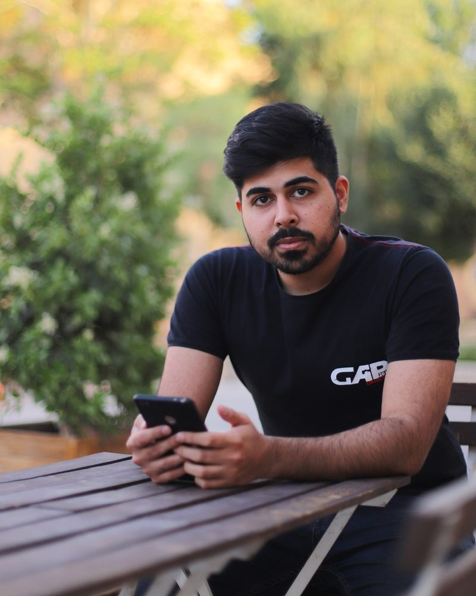

Hi, I'm Mojtaba.
M.Sc. AI student at the University of Genova. Working through LLMs, computer vision, and the gap from model to product.
Genova, Italy Open to AI/ML roles in the EU, 2026/2027
About
I grew up in Iran and studied computer science at Yazd University, then started a Master's at Shahid Beheshti in Tehran before moving to Italy. I'm now finishing an M.Sc. in Computer Science with an AI track at the University of Genova.
Before Italy I spent two years as a Business Technology Analyst at Setare Talaee Co., building Power BI dashboards across sales, finance, and supply chain. The work I'm proudest of from that time was cutting routine reporting time by about a quarter, mostly by rebuilding the data layer underneath the dashboards so people could trust the numbers without checking them by hand.
Outside the M.Sc., between 2020 and 2025 I co-built and ran a small GPU compute setup with two partners — twenty-something rigs, a handful of operating systems, a lot of late-night hardware fiddling. It taught me how to think about physical systems and their cost, which turns out to be useful for ML too.
I'm using the Master's at Genova to move into AI/ML properly. Coming from BI, I tend to think about a model in terms of the dashboard it has to show up on, not just the curve on a validation set.
Now ·
- Thesis applied machine learning, exploring topic-of-the-month while it lasts.
- Reading Bishop, Pattern Recognition and Machine Learning. Karpathy's makemore walkthroughs on the side.
- Building small RAG and CV side projects to see where my intuition breaks.
- Learning Italian. Currently A1, slowly fighting toward B1.
- Looking for AI/ML internships or graduate roles in the EU starting 2026/2027. Sponsorship welcome.
Work
-
2024 — present
M.Sc. Computer Science, AI track
University of Genova, ItalyCoursework across machine learning, computer vision, and motion analysis. Thesis territory: applied ML.
-
2023 — 2025
Business Technology Analyst
Setare Talaee Co., Delijan, IranBuilt and shipped Power BI dashboards across sales, finance, and supply chain. Cut routine reporting time by about 25% by rebuilding the SQL and Power Query pipelines underneath the dashboards. Trained non-technical staff to self-serve, which is when the dashboards started actually paying for themselves.
-
2020 — 2025
Co-founder, Riggosaurus
Self-founded, Iran (remote ops)Co-built and ran a small distributed GPU compute setup with two partners — twenty-plus rigs across six operating systems, with remote monitoring and per-card tuning. Closed down after Ethereum's Proof-of-Stake transition. It taught me what physical compute infrastructure actually costs to operate.
-
2018 — 2020
Co-founder & Software Developer, Pinfopedia
IranCo-founded a Persian-language product encyclopedia. Built the platform with Flask and a relational database. Designed PinfoTags — QR-coded labels that linked a physical product to its digital page. Async layer in Celery + RabbitMQ for image processing and content ingestion.
-
2018 — 2020
Secretary, CS Scientific Association
Yazd University, IranRan programming contests, hackathons, and workshops. Helped the association reach 2nd place in the university-wide ranking during my tenure.
Projects · loading from GitHub
Pulled live from GitHub. Forks and this repo itself are filtered out. Most of the recent activity is coursework from Genova, with older deep-learning and NLP work below.
Contact
Happy to talk to anyone working on applied AI, ML infrastructure, or data products — especially in Italy, Denmark, or any remote-friendly EU team.
currently: somewhere in Genova, fixing one more bug before the espresso wears off.